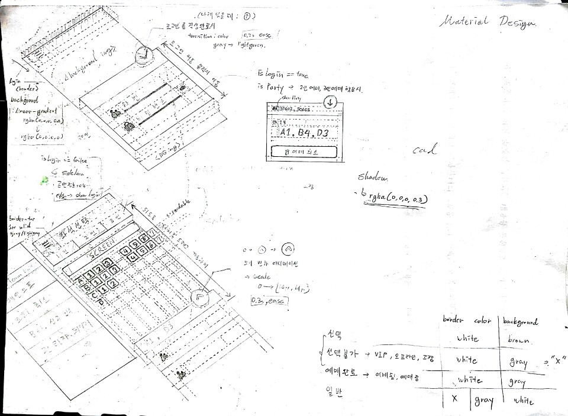

이번 디자인은 좀 제대로 된 반응형 디자인임.

구글의 Material 디자인 권고안을 따라서 만들었고, CSS3의 transition 애니메이션을 적극 사용하였음.
주로 비율이나, 뷰포트 기준으로 디자인을 하였고, 웹 브라우저 창 폭 720px을 기준으로 디자인이 바뀌는 것을 볼 수 있음. (많이는 아니고 그냥 Content영역의 배치가 바뀜)
창 폭 조절 후 페이지를 새로 로딩해야 변경된 디자인이 적용되는게 아니라 폭을 조절하는 순간순간 바로 자동 적용이 됨.
일단 CSS3를 많이 사용하였고, AJAX 트릭을 이용하여 단일 페이지화를 가능하게 하였는데, 여기서 문제가 AJAX 기술에서 innerHTML 메서드를 사용하는데 이를 IE가 지원해주지 않음...
로그인에 대하여
맨 처음 사이트에 접속하면 로그인 화면이 뜰 거임.
좌석을 고른 후 정보를 입력하기보단 그냥 메인에서부터 입력을 해두고 예매를 하는게 좋을거 같기도 해서 로그인 기능을 제일 먼저 보여주는 쪽으로 디자인을 함.
학번 입력창은 최대 5글자까지 입력이 가능하도록 html을 작성하였고, 문자 하나하나 입력할 때 마다 학번 입력창에 입력된 값이 유효한 학번 인지를 검사하고 (학년은 1~3인지, 반은 1~14정도 인지, 번호가 50을 넘어서 비정상적으로 크진 않은지) 유효한 학번이 입력되었을 때, 비밀번호 입력란이 빈칸이 아니면 우측 상단의 버튼(모바일 버젼에선 우측 상단, 데스크탑에선 우측 하단)의 색상이 초록색으로 변하면서 클릭시 로그인이 가능해짐. (이 상태에서 학번이나 비밀번호 값을 유효하지 않은 값으로 수정하면 바로 색상이 원래대로 돌아가면서 로그인 기능이 비활성화 됨. 오오 동주갓 오오...)
<매우 중요함>
참고로 초기 비밀번호는 1111임.
(1111 비밀번호를 이용하여 최초로 로그인하면 프로파일에 연락수단을 입력하기 위한 안내창이 뜸. 그리고 입력된 정보를 토대로 프로파일을 작성하는 거임. 1111 비밀번호를 입력하는 것 자체가 일종의 회원가입 기능이라고 보면 됨.)
로그인 정보는 쿠키데이터로 저장되어 페이지를 새로고침해도, 브라우저를 닫았다 열어도 문제 없음.
다만, 쿠키 데이터의 유효 시간은 로그인한 시점으로 부터 30분 동안 만이고, 그 후에는 효력이 없어짐. (보안을 신경써서 30분 정도로만 해둠. 이게 너무 짧은거 같다거나 긴거 같다면 간단히 변경 가능하니 말해주셈.)
유저 데이터
유저 데이터에는 6가지 항목이 존재함
1. 학번
2. 비밀번호
3. 이름/연락 수단
4. 파티원 (2인, 3인 동시 예매시 함께하는 학번들) <파티장(:예매시 사용한 학번)의 파티원 항목 맨 앞에는 'master' 태그가 붙고, 파티장 계정을 이용해야만 파티원의 예매를 취소 할 수 있도록 할 예정.>
5. 공연 시간 (몇 부에 해당하는 공연을 예매 했는지)
6. 좌석 (파티원이 있을 경우, 파티원의 좌석도 전부 표시 됨.)
돌아가기